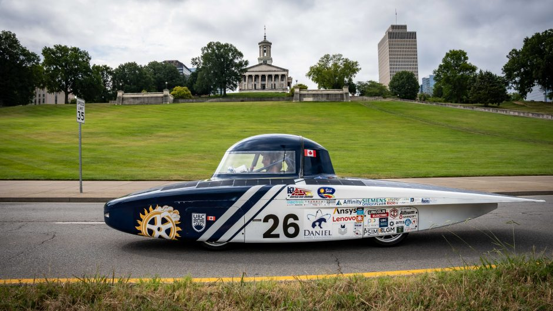
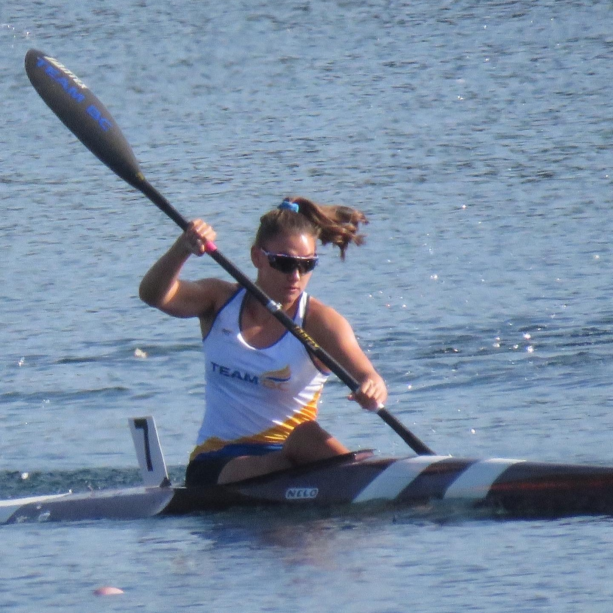
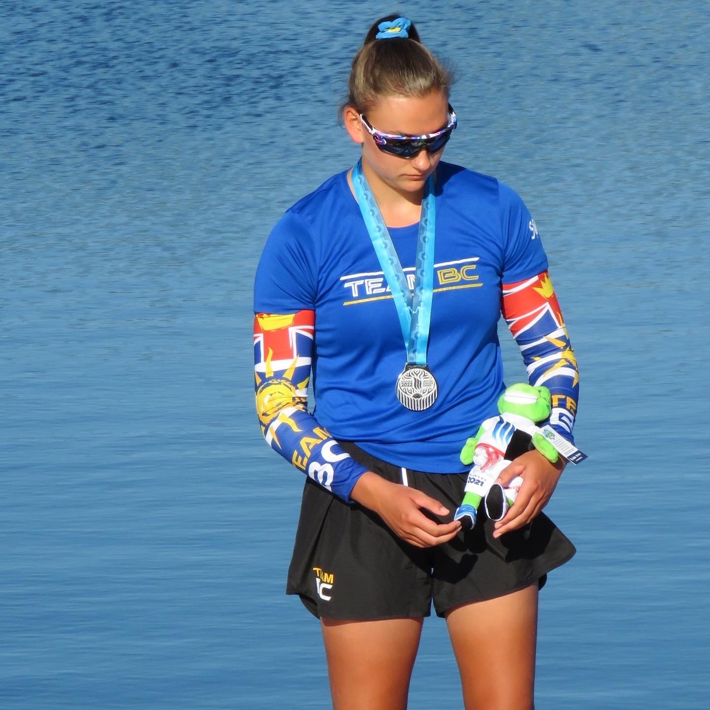

UBC Solar is a student design team focused on designing and racing solar powered cars. The team usually competes at one or two major competitions each year, including the Formula Sun Grand Prix (FSGP) and the American Solar Challenge (ASC). The team is split into mechanical and electrical disciplines, each further split into specialized subteams. I'm a member of the Power and Signals subteam which manages all electrical systems on the car apart from the main battery. The projects that I am responsible for include: circuit design, PCB design, PCB assembly and validation, embedded programming, motor simulation / control, and wire harnessing.
Altium LTSpice C STM32 Soldering/Reflow Simulink MATLAB Wire Harnessing

I’ve competed in many sports including track, cross country, basketball, and soccer, but the high-pressure element of racing, combined with the the amazing feeling of gliding across the water, made kayaking my favourite. My dedication to the sport has led to many successes throughout my career, most notably earning me a spot on Team Canada in 2019 and 2021.
My typical training schedule consisted of 2–4 training sessions per day and included activities such as paddling (obviously), running, strength training, HIIT, and swimming. From this intense and physically demanding lifestyle I built a strong work ethic and sharpened my time management skills by learning to balance kayaking, other sports, and school.
I also learned to stay calm and focused under extreme pressure. Races would often be decided by mere tenths, hundredths, or even thousandths of a second, leaving absolutely no room for error. Competing under these conditions taught me not just to handle pressure, but to thrive in it.